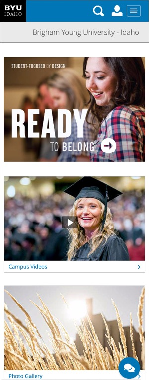
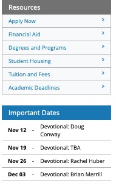

The last few years have been really exciting for web
designers/developers. With the arrival and support for things like
Flexbox, CSS Grid, and others we finally have not just good...but
great tools to accomplish our layouts.
Suddenly things that were not possible (or at least things that
involved a lot of pain to do) are not only possible but in some
cases easy to do. Let's take this opportunity to get out of ruts and
experiment with these new tools.
All of that being said, it is also important to develop good
foundational skills building traditional designs. This activity is
designed to both encourage to look forward to new possibilities in
Web Design, and make sure that we have the core skills necessary to
move ourselves and our designs forward.
For the rest of this exercise we will be re-building the BYU-Idaho
Home page. Begin by familiarizing yourself with the page and how
it responds at different screen widths. Because of time
constraints we will be excluding certain parts of the page and
making a few small changes. See the screenshots below for more
details.

Mobile headerDesktop full page
First we are going to simplify the header. We are going to keep
the mobile header on all layouts. The Black menu bar that shows
in the second screenshot will not be built. The only difference
between the navbar on the mobile and larger screen layouts will
be the addition of the word "Home" on wider screens. You will
also not be required to make the buttons in the menu work. We
just don't have time this week.
Second, we will end our page right after the Taylor building
image. The large blue and black footers will not be required.
Pay attention to the details of the page. This assignment is
very much about details!
Consider this design through the lens of the component based
design introduced in the Atomic design chapter. How many
components do you see? I counted three different ones.
Interest Box

List of LinksNewsroom Small screenNewsroom Large Screen
At the top there is a collection of 3 interest boxes...fairly
simple:image with a title below.
There are lists of links that are formatted in a few different
ways as asides.
Finally there is the Newsroom article component. Date, title,
description, button, with an image on larger screens.
Getting Started
Download this code and
open it in your editor to get started. It contains an html file
with the HTML for the header, and some SCSS files with some
helpful things. Review these files before moving on.
Pay particular attention to the code in the
_icons.scss file. All of the icons on the site are
pulled from a font file. This is a common practice. This partial
contains the CSS to allow you to pull each icon out and us it. You
can see an example of this in the provided header code:
<a href="#">
<span aria-hidden="true" class="icon-byui-logo">
<span class="sr-only">Link to BYU-Idaho home page</span>
</span>
</a>
Note the class="icon-byui-logo on the span. This
class will go find the right incon in the font and display it.
Pay close attention as well to the other properties in this
snippet. aria-hidden="true" and
class="sr-only". You will see more of that as you
look through the provided code. Both of these work together to
improve the accessability of the site to visually impaired
visitors.
aria-hidden="true" is a note to the screen reader to
ignore this element. It makes sense...it is purely decorative and
there is nothing read, but it would be nice to know that there was
a logo...so the span with the sr-only class contains
a message that should not be visible, but only read if a visitor
has a screen reader...in fact if you look at the SCSS provided you
will see that rule. It goes to great lengths to make sure that any
element is does not show up for anything but
screen readers only. (this
particular version of that rule was borrowed from Bootstrap)
As you write your HTML pay attention to accessability! If there
are any elements that cannot be understood as read...add some
sr-only notes to help visitors out. Any elements on
your page can likewise be removed from the screen reader's queue
with the aria-hidden property, making your pages
easier and quicker to navigate with readers.
Start your work by styling the header and nav to match the BYUI at
a mobile size. Then adjust it for larger desktops as discussed
above.
As you style put some thought and planning into the naming and
structure of your SCSS as well. See if you can apply the
principles from a CSS architecture like
BEM
for example.
Component Design
Continue your work on this site by building the three components
discussed above. Write the HTML first for one of each of the three
components, then style them. Have a goal of keeping your HTML
markup as simple as possible, while focusing on re-use.
Mobile Layout
Once you have your components built and styled, write the rest of
the HTML for the page to account for all of the content. Re-use
the component code as appropriate. You will need to grab the
images from the actual site to use.
Then begin your styling for the mobile layout.
As you are building and styling your page, it is ok to look at the
existing page source to get ideas about how it was built. Resist
the tempation to copy and paste anything from the actual page
however. You will learn much more from this activity if you wrte
all of the code yourself!
Desktop Layout
Once you have the mobile layout done continue on to the desktop.
Submit
Upload your HTML and SCSS (zip it up) to iLearn.
Grading
BYU-Idaho Home page created with thought given to accessability 5
pts